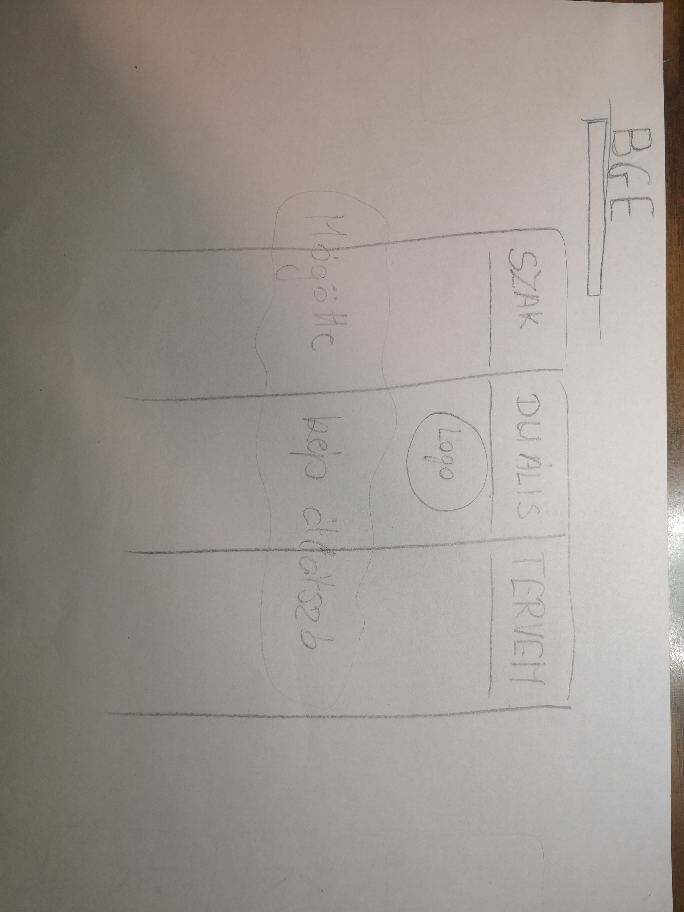
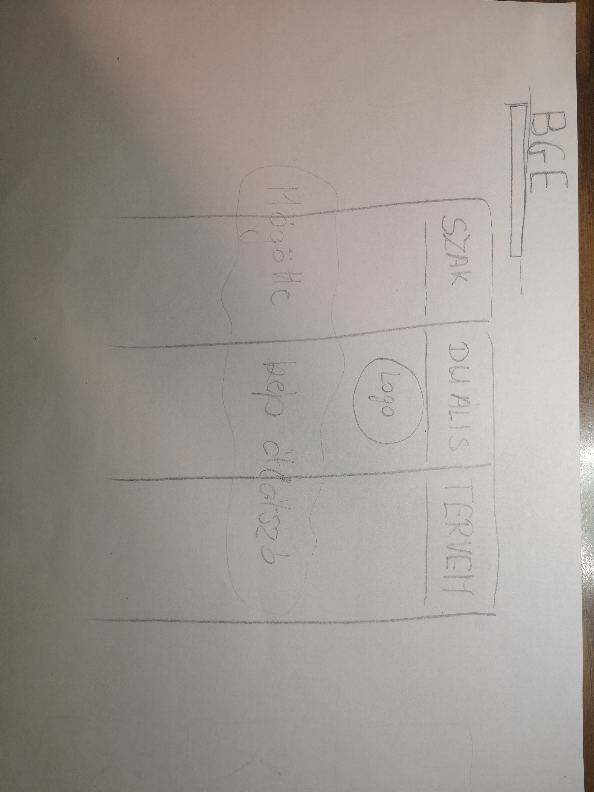

Grafikai terv
Az eredeti tervem a képeken látható, melyekből könnyedén levonható, hogy a végeredmény sokmindenben eltér.
Elkészítés közben több akadályba is ütköztem, kezdve a legelső kép jobb oldalra helyezésével. A folyamat során a végére egészen jól belejöttem, bár a tervezetthez képest néhány elem leegyszerűsödött. Az elrendezés végül azért változott meg, hogy a weblap telefonról is könnyedén kezelhető, esztétikus legyen.
A Kezdőlapon a tervezettől leginkább a "kártyák" elhelyezkedése tér el, illetve egy bevezető szöveggel és képpel egészíettem ki.
A BME és BGE oldalak struktúrája a tervezett módon alakult, viszont egy látványosabb elemet, az áttetsző logós hátteret kihagytam. A háttér kiválasztása is hosszabb időbe telt, ezért miután beállítottam egy megfelelőt, nem próbáltam meg másikat beállítani.
A legnagyobb segitségemre az alábbi oldal volt:
w3schools.com
 
